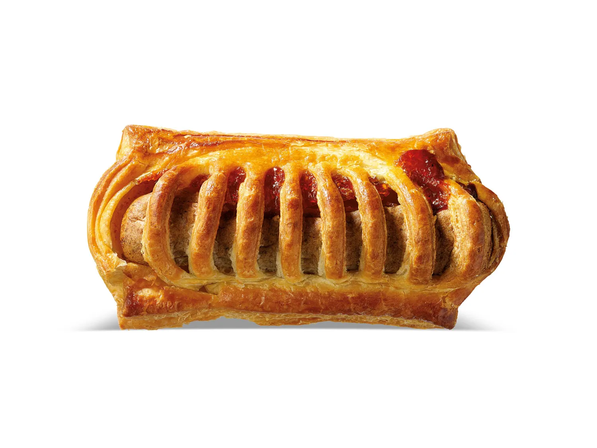

Frikandelbroodje

Frikandelbroodjes, a popular snack in the Netherlands, are truly amazing for several reasons. First and foremost, they offer a unique combination of flavors and textures that is hard to resist. The frikandel, a type of Dutch sausage, provides a savory and slightly spicy flavor that perfectly complements the flaky and buttery puff pastry. The contrast between the rich, meaty filling and the light, crisp pastry makes every bite a delight.
Moreover, frikandelbroodjes are incredibly versatile. They can be enjoyed at any time of the day, whether it’s for breakfast, lunch, dinner, or a snack in between. They’re also portable and easy to eat on the go, making them a convenient option for busy individuals. Despite their simplicity, frikandelbroodjes are a testament to the fact that sometimes, the most amazing foods are those that stick to the basics and do them exceptionally well. Whether you’re a fan of Dutch cuisine or just a food lover in general, frikandelbroodjes are definitely worth trying.
ingredients
- 1 Pak Koopmans Bladerdeeg
- Frikandellen from the freezer (first defrost)
- 1 Losgeklopt ei
- Optional: Curry saus
steps
- Prepare the dough: Mix the ingredients to form a smooth dough. This usually takes about 15-20 minutes1.
- Divide the dough: Divide the dough into 6 pieces, shape the dough into balls and let the balls rest under plastic for 30 minutes1. You can grease the plastic with some oil so that the bread does not stick to it.
- Preheat the oven: Preheat the oven to 200°C.
- Prepare the frikandels: Cut the frikandels into 2 pieces.
- Prepare the puff pastry: Lay the puff pastry on a floured work surface and cut into 8 equal pieces
- Assemble the frikandelbroodjes: Spread a tablespoon of mustard on 4 slices and place a half frikandel on it. Brush the edges with some beaten egg2. Cut incisions in the remaining 4 slices of puff pastry. Place these slices on the bottoms and gently press the sides with a fork2. Brush the top with egg
- Bake the frikandelbroodjes: Place the frikandelbroodjes on the baking paper and bake them for about 15-20 minutes in a preheated oven. If the puff pastry is light brown, then it is done!